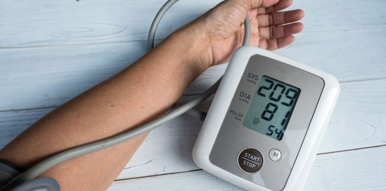
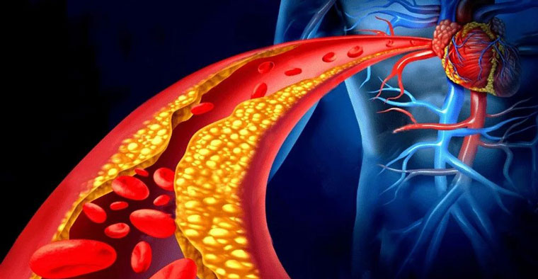
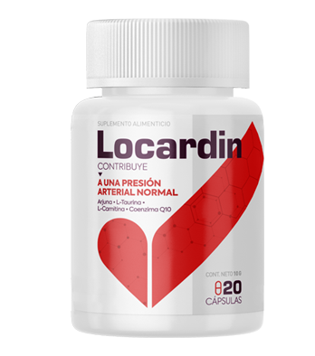
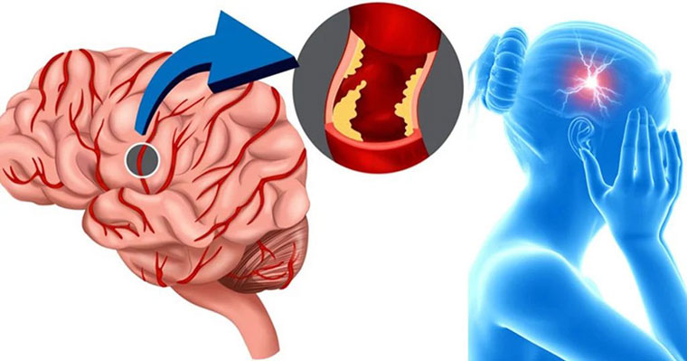

Consejo de un cardiólogo sobre el tratamiento y la prevención de la hipertensión
¡Hola!
Durante más de veinte años he estado trabajando como cardiólogo en un gran centro médico. Durante mi práctica he visto mucho y he salvado más de una vida. Hoy quiero hablar de lo que es la hipertensión y qué errores se cometen en el tratamiento
¿Qué es la hipertensión?
La hipertensión es el aumento persistente de la presión arterial (P.A) por encima del límite 140/90. El aumento de la presión arterial conduce a deformidades vasculares, trastornos del corazón, del cerebro, de los riñones y de la visión.
Debemos chequearnos:
- Presión baja - 115-110/70 mm Hg.
- Normal - 120/80 mm Hg.
- El límite superior es 130-139/85 mm Hg.
- La hipertensión arterial en 1er grado: 140-159/90-99 mm Hg. 2o grado: 160-179/ 100-109 mm Hg. 3er grado: 180/110 mm Hg. y más.
Dependiendo del daño inducido por la presión a los órganos internos, hay 3 etapas de hipertensión: inicial (la presión aumenta irregularmente, se normaliza de forma independiente), estable (se puede bajar la presión arterial sólo con medicamentos, aparecen lesiones de órganos), notable (La presión es persistentemente elevada, los órganos se ven afectados, alto riesgo de accidente cerebrovascular y ataque cardíaco).

Causas de la enfermedad
Las razones no están completamente estudiadas. Se cree que la hipertensión se desarrolla cuando se combina con una predisposición genética, características ambientales negativas (obesidad, estrés, baja actividad física, malos hábitos, consumo excesivo de sal de mesa, etc.).
¿Por qué aumenta la presión al tomar drogas hipotensoras?
Hay varias razones. El estrés, exceso de trabajo, estilo de vida poco saludable, o, por ejemplo, incompatibilidad de la droga puede afectar. Sucede que el medicamento o su dosis no es adecuada para el paciente y comienza el efecto inverso. Esto es muy peligroso y puede causar complicaciones graves en forma de insuficiencia interna en los órganos o crisis hipertensiva.
También hay casos en los que la presión se normaliza gracias a la toma de medicamentos, y los pacientes los dejan de tomar. El curso inacabado evita que el músculo cardíaco se recupere y hace que trabaje duro, usando y obstruyendo los vasos sanguíneos con colesterol.

¿Qué tratamiento es el correcto?
El tratamiento comienza con una corrección del estilo de vida y sólo entonces se selecciona el medicamento. Las desventajas de los inhibidores, bloqueadores beta, antagonistas del calcio y diuréticos son que cuando se dejan de tomar, causan inestabilidad de presión, es decir altibajos. Estos medicamentos deben beberse de forma permanente, lo que afecta a otros órganos internos.
Es por eso que los médicos han comenzado a prescribir medicamentos para la presión con sustancias activas de origen natural. Tales productos se pueden tomar sin cita previa, ya que son completamente seguros para el cuerpo y llevan la presión a su normalidad.
De todos los compuestos naturales, resalto el , que elimina la causa de la hipertensión, en lugar de aliviar los síntomas como sus análogos. Otra ventaja importante es que no necesita ser bebido de forma permanente y ayuda a fortalecer las paredes de los vasos

Los componentes adelgazan la sangre, mejoran el corazón y reducen el colesterol, que viene siendo la causa del bloqueo de los vasos sanguíneos y la presión alta.
Un curso está diseñado para un mes. El resultado depende del grado de hipertensión, pero la el promedio de recuperación es de 3-7 días. La presión disminuirá, y con ella comenzarán a pasar los dolores de cabeza, mareos, zumbidos, sensibilidad a cambios de temperatura e insomnio, ya que el compuesto actúa de forma integral.
Y, en conclusión, estoy feliz de responder a sus preguntas:
En mi juventud siempre tuve la presión arterial baja, pero ahora es
al revés. ¿Cómo pudo pasar esto?
Claudia E. Ruiz, Bucaramanga
Es algo bastante normal. Debido a los cambios relacionados con la edad, también se ven afectados los vasos sanguíneos, es cuadno vemos que una persona hipotónica puede volverse hipertensa. Cuando somos jóvenes, nuestros vasos son elásticos, suaves y ayudan a mantener la presión a un cierto nivel. A medida que envejecen, se vuelven más densos a medida que aumenta la presión
Mi madre era hipertensa. A medida que pasaba el tiempo, empecé a
preocuparme por los problemas de la presión. Entonces, ¿la hipertensión es hereditaria?
Milena Amena, Cali
La predisposición existe, especialmente si ambos padres son hipertensos. La hipertensión puede causar comorbilidades a nivel endocrinologico. En otros casos, la enfermedad aparece debido a razones físicas: estrés regular, condiciones climáticas, trabajo físico duro, etc.

La hipertensión es un problema de los hombres o las
mujeres?
Carlos E Machado, Bogotá
Este problema se aplica por igual a hombres y mujeres independientemente de su edad. En los últimos tiempos, cada vez más jóvenes están empezando a preocuparse por el aumento de la presión arterial
Por qué llaman a la hipertensión “la muerte silenciosa”
Samy Casallas, Medellín
Más de la mitad de los pacientes hipertensos no sienten ningún síntoma. Tal vez una persona nunca ha medido su presión y la primera manifestación de la hipertensión es un ataque cardíaco inmediato o un accidente cerebrovascular.
Ahora tengo otra buena noticia: está incluido por el gobierno en el programa social y se puede comprar en el sitio web del fabricante a un precio con descuento. En este momento, más de diez mil personas han participado en el programa social